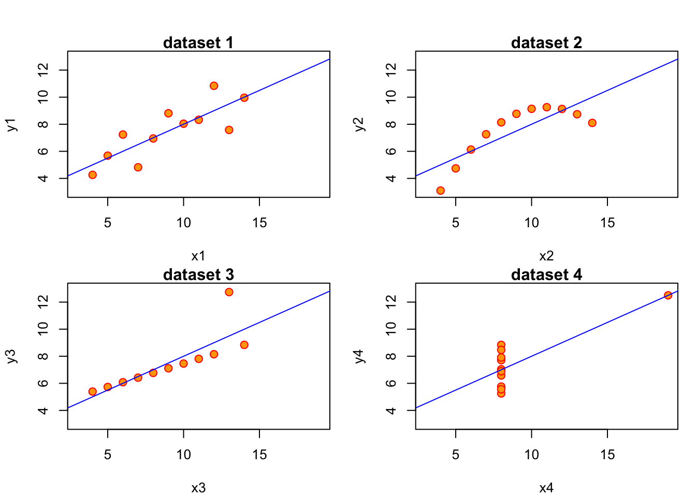
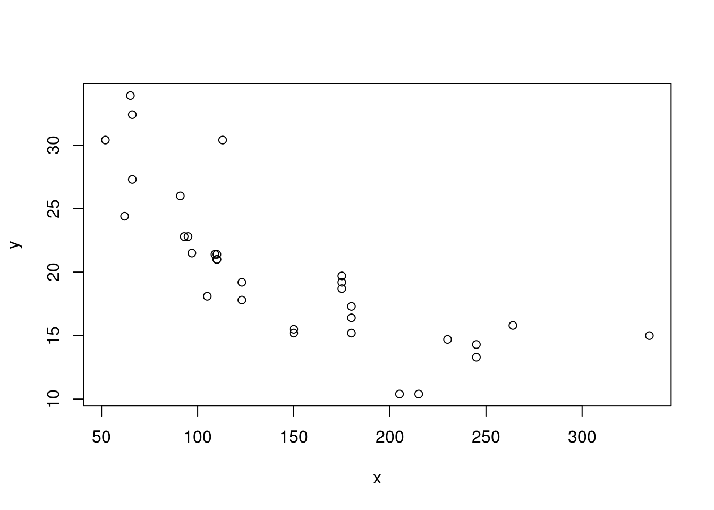
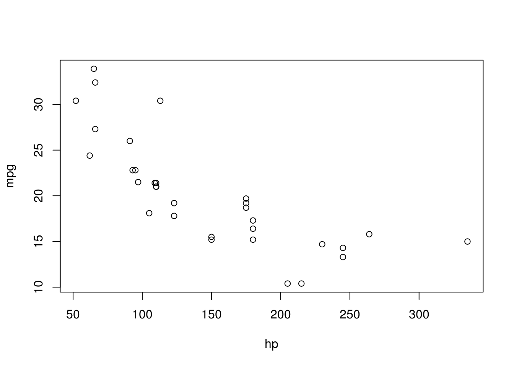

Chapter 3 Linear Regression
In this chapter we will learn an additional way how one can represent the relationship between outcome, or dependent variable variable \(y\) and an explanatory or independent variable \(x\). We will refer throughout to the graphical representation of a collection of independent observations on \(x\) and \(y\), i.e., a dataset.
3.2 Ordinary Least Squares (OLS) Estimator
The method to compute (or estimate) \(b_0\) and \(b_1\) we illustrated above is called Ordinary Least Squares, or OLS. \(b_0\) and \(b_1\) are therefore also often called the OLS coefficients. By solving problem (3.4) one can derive an explicit formula for them:
\[\begin{equation} b_1 = \frac{cov(x,y)}{var(x)}, \tag{3.5} \end{equation}\]i.e. the estimate of the slope coefficient is the covariance between \(x\) and \(y\) divided by the variance of \(x\), both computed from our sample of data. With \(b_1\) in hand, we can get the estimate for the intercept as
\[\begin{equation} b_0 = \bar{y} - b_1 \bar{x}. \tag{3.6} \end{equation}\]where \(\bar{z}\) denotes the sample mean of variable \(z\). The interpretation of the OLS slope coefficient \(b_1\) is as follows. Given a line as in \(y = b_0 + b_1 x\),
- \(b_1 = \frac{d y}{d x}\) measures the change in \(y\) resulting from a one unit change in \(x\)
- For example, if \(y\) is wage and \(x\) is years of education, \(b_1\) would measure the effect of an additional year of education on wages.
3.2.1 Linear Regression without Regressor
There are several important special cases for the linear regression introduced above. Let’s start with the most obvious one: What is the meaning of running a regression without any regressor, i.e. without a \(x\)? Our line becomes very simple. Instead of (3.1), we get
\[\begin{equation} y = b_0. \tag{3.7} \end{equation}\]This means that our minization problem in (3.4) also becomes very simple: We only have to choose \(b_0\)! We have
\[ b_0 = \arg\min_{\text{int}} \sum_{i=1}^N \left[y_i - \text{int}\right]^2, \] which is a quadratic equation with a unique optimum such that \[ b_0 = \frac{1}{N} \sum_{i=1}^N y_i = \overline{y}. \]
Least Squares without regressor \(x\) estimates the sample mean of the outcome variable \(y\), i.e. it produces \(\overline{y}\).
3.2.2 Regression without an Intercept
We follow the same logic here, just that we miss another bit from our initial equation and the minimisation problem in (3.4) now becomes:
\[\begin{align} b_1 &= \arg\min_{\text{slope}} \sum_{i=1}^N \left[y_i - \text{slope } x_i \right]^2\\ \mapsto b_1 &= \frac{\frac{1}{N}\sum_{i=1}^N x_i y_i}{\frac{1}{N}\sum_{i=1}^N x_i^2} = \frac{\bar{x} \bar{y}}{\overline{x^2}} \tag{3.8} \end{align}\]Least Squares without intercept (i.e. with \(b_0=0\)) is a line that passes through the origin.
In this case we only get to choose the slope \(b_1\) of this anchored line.3 You should now try out both of those restrictions on our linear model by spending some time with
launchApp("reg_constrained")3.2.3 Centering A Regression
By centering or demeaning a regression, we mean to substract from both \(y\) and \(x\) their respective averages to obtain \(\tilde{y}_i = y_i - \bar{y}\) and \(\tilde{x}_i = x_i - \bar{x}\). We then run a regression without intercept as above. That is, we use \(\tilde{x}_i,\tilde{y}_i\) instead of \(x_i,y_i\) in (3.8) to obtain our slope estimate \(b_1\):
\[\begin{align} b_1 &= \frac{\frac{1}{N}\sum_{i=1}^N \tilde{x}_i \tilde{y}_i}{\frac{1}{N}\sum_{i=1}^N \tilde{x}_i^2}\\ &= \frac{\frac{1}{N}\sum_{i=1}^N (x_i - \bar{x}) (y_i - \bar{y})}{\frac{1}{N}\sum_{i=1}^N (x_i - \bar{x})^2} \\ &= \frac{cov(x,y)}{var(x)} \tag{3.9} \end{align}\]This last expression is identical to the one in (3.5)! It’s the standard OLS estimate for the slope coefficient. We note the following:
Adding a constant to a regression produces the same result as centering all variables and estimating without intercept. So, unless all variables are centered, always include an intercept in the regression.
To get a better feel for what is going on here, you can try this out now by yourself by typing:
launchApp("demeaned_reg")3.2.4 Standardizing A Regression
Standardizing a variable \(z\) means to demean as above, but in addition to divide the demeaned value by its own standard deviation. Similarly to what we did above for centering, we define transformed variables \(\breve{y}_i = \frac{y_i-\bar{y}}{\sigma_y}\) and \(\breve{x}_i = \frac{x_i-\bar{x}}{\sigma_x}\) where \(\sigma_z\) is the standard deviation of variable \(z\). From here on, you should by now be used to what comes next! As above, we use \(\breve{x}_i,\breve{y}_i\) instead of \(x_i,y_i\) in (3.8) to this time obtain:
\[\begin{align} b_1 &= \frac{\frac{1}{N}\sum_{i=1}^N \breve{x}_i \breve{y}_i}{\frac{1}{N}\sum_{i=1}^N \breve{x}_i^2}\\ &= \frac{\frac{1}{N}\sum_{i=1}^N \frac{x_i - \bar{x}}{\sigma_x} \frac{y_i - \bar{y}}{\sigma_y}}{\frac{1}{N}\sum_{i=1}^N \left(\frac{x_i - \bar{x}}{\sigma_x}\right)^2} \\ &= \frac{Cov(x,y)}{\sigma_x \sigma_y} \\ &= Corr(x,y) \tag{3.10} \end{align}\]After we standardize both \(y\) and \(x\), the slope coefficient \(b_1\) in the regression without intercept is equal to the correlation coefficient.
And also for this case we have a practical application for you. Just type this and play around with the app for a little while!
launchApp("reg_standardized")3.3 Predictions and Residuals
Now we want to ask how our residuals \(e_i\) relate to the prediction \(\hat{y_i}\). Let us first think about the average of all predictions \(\hat{y_i}\), i.e. the number \(\frac{1}{N} \sum_{i=1}^N \hat{y_i}\). Let’s just take (3.2) and plug this into this average, so that we get
\[\begin{align} \frac{1}{N} \sum_{i=1}^N \hat{y_i} &= \frac{1}{N} \sum_{i=1}^N b_0 + b_1 x_i \\ &= b_0 + b_1 \frac{1}{N} \sum_{i=1}^N x_i \\ &= b_0 + b_1 \bar{x} \\ \end{align}\]But that last line is just equal to the formula for the OLS intercept (3.6), \(b_0 = \bar{y} - b_1 \bar{x}\)! That means of course that
\[ \frac{1}{N} \sum_{i=1}^N \hat{y_i} = b_0 + b_1 \bar{x} = \bar{y} \] in other words:
The average of our predictions \(\hat{y_i}\) is identically equal to the mean of the outcome \(y\). This implies that the average of the residuals is equal to zero.
Related to this result, we can show that the prediction \(\hat{y}\) and the residuals are uncorrelated, something that is often called orthogonality between \(\hat{y}_i\) and \(e_i\). We would write this as
It’s useful to bring back the sample data which generate figure 3.1 at this point in order to verify these claims:
#OUT> y y_hat error
#OUT> 1 2.09 2.57 -0.48
#OUT> 2 2.79 3.41 -0.62
#OUT> 3 6.49 4.25 2.24
#OUT> 4 1.71 5.10 -3.39
#OUT> 5 9.89 5.94 3.95
#OUT> 6 7.62 6.78 0.83
#OUT> 7 4.86 7.63 -2.77
#OUT> 8 7.38 8.47 -1.09
#OUT> 9 10.63 9.31 1.32Let’s check that these claims are true in this sample of data. We want that
- The average of \(\hat{y}_i\) to be the same as the mean of \(y\)
- The average of the errors should be zero.
- Prediction and errors should be uncorrelated.
# 1.
all.equal(mean(ss$error), 0)#OUT> [1] TRUE# 2.
all.equal(mean(ss$y_hat), mean(ss$y))#OUT> [1] TRUE# 3.
all.equal(cov(ss$error,ss$y_hat), 0)#OUT> [1] TRUESo indeed we can confirm this result with our test dataset. Great!
3.4 Correlation, Covariance and Linearity
It is important to keep in mind that Correlation and Covariance relate to a linear relationship between x and y. Given how the regression line is estimated by OLS (see just above), you can see that the regression line inherits this property from the Covariance. A famous exercise by Francis Anscombe (1973) illustrates this by constructing 4 different datasets which all have identical linear statistics: mean, variance, correlation and regression line are identical. However, the usefulness of the statistics to describe the relationship in the data is not clear.

The important lesson from this example is the following:
Always visually inspect your data, and don’t rely exclusively on summary statistics like mean, variance, correlation and regression line. All of those assume a linear relationship between the variables in your data.
The mission of Anscombe has been continued recently. As a result of this we can have a look at the datasauRus package, which pursues Anscbombe’s idea through a multitude of funny data sets, all with the same linear statistics. Don’t just compute the covariance, or you might actually end up looking at a Dinosaur! What? Type this to find out:
launchApp("datasaurus")
aboutApp("datasaurus")3.4.1 Non-Linear Relationships in Data
Suppose our data now looks like this:

Putting our previous best line defined in equation (3.3) as \(y = b_0 + b_1 x + e\), we get something like this:

Figure 3.3: Best line with non-linear data?
Somehow when looking at 3.3 one is not totally convinced that the straight line is a good summary of this relationship. For values \(x\in[50,120]\) the line seems to low, then again too high, and it completely misses the right boundary. It’s easy to address this shortcoming by including higher order terms of an explanatory variable. We would modify (3.3) to read now
\[\begin{equation} y_i = b_0 + b_1 x_i + b_2 x_i^2 + e_i \tag{3.11} \end{equation}\]This is a special case of multiple regression, which we will talk about in chapter 4. You can see that there are multiple slope coefficients. For now, let’s just see how this performs:
Figure 3.4: Better line with non-linear data!
3.5 Analysing \(Var(y)\)
Analysis of Variance (ANOVA) refers to a method to decompose variation in one variable as a function of several others. We can use this idea on our outcome \(y\). Suppose we wanted to know the variance of \(y\), keeping in mind that, by definition, \(y_i = \hat{y}_i + e_i\). We would write
\[\begin{align} Var(y) &= Var(\hat{y} + e)\\ &= Var(\hat{y}) + Var(e) + 2 Cov(\hat{y},e)\\ &= Var(\hat{y}) + Var(e) \tag{3.12} \end{align}\]We have seen above in 3.3 that the covariance between prediction \(\hat{y}\) and error \(e\) is zero, that’s why we have \(Cov(\hat{y},e)=0\) in (3.12). What this tells us in words is that we can decompose the variance in the observed outcome \(y\) into a part that relates to variance as explained by the model and a part that comes from unexplained variation. Finally, we know the definition of variance, and can thus write down the respective formulae for each part:
- \(Var(y) = \frac{1}{N}\sum_{i=1}^N (y_i - \bar{y})^2\)
- \(Var(\hat{y}) = \frac{1}{N}\sum_{i=1}^N (\hat{y_i} - \bar{y})^2\), because the mean of \(\hat{y}\) is \(\bar{y}\) as we know. Finally,
- \(Var(e) = \frac{1}{N}\sum_{i=1}^N e_i^2\), because the mean of \(e\) is zero.
We can thus formulate how the total variation in outcome \(y\) is aportioned between model and unexplained variation:
The total variation in outcome \(y\) (often called SST, or total sum of squares) is equal to the sum of explained squares (SSE) plus the sum of residuals (SSR). We have thus SST = SSE + SSR.
3.6 Assessing the Goodness of Fit
In our setup, there exists a convenient measure for how good a particular statistical model fits the data. It is called \(R^2\) (R squared), also called the coefficient of determination. We make use of the just introduced decomposition of variance, and write the formula as
\[\begin{equation}R^2 = \frac{\text{variance explained}}{\text{total variance}} = \frac{SSE}{SST} = 1 - \frac{SS\tag{3.13}] (#eq:Rsquared) \end{equation}\]It is easy to see that a good fit is one where the sum of explained squares (SSE) is large relativ to the total variation (SST). In such a case, we observe an \(R^2\) close to one. In the opposite case, we will see an \(R^2\) close to zero. Notice that a small \(R^2\) does not imply that the model is useless, just that it explains a small fraction of the observed variation.
3.7 An Example: California Student Test Scores
Luckily for us, fitting a linear model to some data does not require us to iteratively find the best intercept and slope manually, as you have experienced in our apps. As it turns out, R can do this much more precisely, and very fast!
Let’s explore how to do this, using a real life dataset taken from the Ecdat package which includes many economics-related dataset. In this example, we will use the Caschool dataset which contains the average test scores of 420 elementary schools in California along with some additional information.
3.7.1 Loading and exploring Data
We can explore which variables are included in the dataset using the names() function:
library("Ecdat") # Load the Ecdat library
names(Caschool) # Display the variables of the Caschool dataset#OUT> [1] "distcod" "county" "district" "grspan" "enrltot" "teachers"
#OUT> [7] "calwpct" "mealpct" "computer" "testscr" "compstu" "expnstu"
#OUT> [13] "str" "avginc" "elpct" "readscr" "mathscr"For each variable in the dataset, basic summary statistics can be obtained by calling summary()
summary(Caschool[, c("testscr", "str", "avginc")])#OUT> testscr str avginc
#OUT> Min. :605.5 Min. :14.00 Min. : 5.335
#OUT> 1st Qu.:640.0 1st Qu.:18.58 1st Qu.:10.639
#OUT> Median :654.5 Median :19.72 Median :13.728
#OUT> Mean :654.2 Mean :19.64 Mean :15.317
#OUT> 3rd Qu.:666.7 3rd Qu.:20.87 3rd Qu.:17.629
#OUT> Max. :706.8 Max. :25.80 Max. :55.3283.7.2 Fitting a linear model
Suppose we are interested in the following linear model:
\[\text{testscr}_i = b_0 + b_1 \times \text{str}_i + e_i\] Where \(\text{testscr}_i\) is the average test score for a given school \(i\) and \(\text{str}_i\) is the Student/Teacher Ratio (i.e. the average number of students per teacher) in the same school \(i\). Again, \(b_0\) and \(b_1\) are the intercept and the slope of the regression line.
The subscript \(i\) indexes all unique elementary schools (\(i \in \{1, 2, 3, \dots 420\}\)) and \(e_i\) is the error, or residual, of the regression. (Remember that our procedure for finding the line of best fit is to minimize the sum of squared residuals (SSR)).
At this point you should step back and take a second to think about what you believe the relation between a school’s test scores and student/teacher ratio will be. Do you believe that, in general, a high student/teacher ratio will be associated with higher-than-average test scores for the school? Do you think that the number of students per teacher will impact results in any way?
Let’s find out! As always, we will start by plotting the data to inspect it visually:
plot(formula = testscr ~ str,
data = Caschool,
xlab = "Student/Teacher Ratio",
ylab = "Average Test Score", pch = 21, col = 'blue')Figure 3.5: Student Teacher Ratio vs Test Scores
Can you spot a trend in the data? According to you, what would the line of best fit look like? Would it be upward or downward slopping? Let’s ask R!
3.7.3 The lm() function
We will use the built-in lm() function to estimate the coefficients \(b_0\) and \(b_1\) using the data at hand. lm stands for linear model, which is what our representation in (3.3) amounts to. This function typically only takes 2 arguments, formula and data:
lm(formula, data)
formulais the description of our model which we wantRto estimate for us. Its syntax is very simple:Y ~ X(more generally,DependentVariable ~ Independent Variables). You can think of the tilda operator~as the equal sign in your model equation. An intercept is included by default and so you do not have to ask for it informula. For example, the simple model \(income = b_0 + b_1 \cdot age\) can be written asincome ~ age. Aformulacan sometimes be written between quotation marks:"X ~ Y".datais simply thedata.framecontaining the variables in the model.
In the context of our example, the function call is therefore:
# assign lm() output to some object `fit_cal`
fit_cal <- lm(formula = testscr ~ str, data = Caschool)
# ask R for the regression summary
summary(fit_cal) #OUT>
#OUT> Call:
#OUT> lm(formula = testscr ~ str, data = Caschool)
#OUT>
#OUT> Residuals:
#OUT> Min 1Q Median 3Q Max
#OUT> -47.727 -14.251 0.483 12.822 48.540
#OUT>
#OUT> Coefficients:
#OUT> Estimate Std. Error t value Pr(>|t|)
#OUT> (Intercept) 698.9330 9.4675 73.825 < 2e-16 ***
#OUT> str -2.2798 0.4798 -4.751 2.78e-06 ***
#OUT> ---
#OUT> Signif. codes: 0 '***' 0.001 '**' 0.01 '*' 0.05 '.' 0.1 ' ' 1
#OUT>
#OUT> Residual standard error: 18.58 on 418 degrees of freedom
#OUT> Multiple R-squared: 0.05124, Adjusted R-squared: 0.04897
#OUT> F-statistic: 22.58 on 1 and 418 DF, p-value: 2.783e-06As we can see, R returns its estimates for the Intercept and Slope coefficients, \(b_0 =\) 698.93 and \(b_1 =\) -2.28. The estimated relationship between a school’s Student/Teacher Ratio and its average test results is negative.
The output of the summary method for an lm object is commonly called a regression table, and you will be able to decypher it by the end of this course. You should be able to find an interpret the \(R^2\) though: Are we explaining a lot of the variance in testscr with this simple model, or are we not?
3.7.4 Plotting the regression line
We can also use our lm fit to draw the regression line on top of our initial scatterplot, using the following syntax:
plot(formula = testscr ~ str,
data = Caschool,
xlab = "Student/Teacher Ratio",
ylab = "Average Test Score", pch = 21, col = 'blue')# same plot as before
abline(fit_cal, col = 'red') # add regression lineFigure 3.6: Test Scores with Regression Line
As you probably expected, the best line for schools’ Student/Teacher Ratio and its average test results is downward sloping.
Just as a way of showcasing another way to make the above plot, here is how you could use ggplot:
library(ggplot2)
p <- ggplot(mapping = aes(x = str, y = testscr), data = Caschool) # base plot
p <- p + geom_point() # add points
p <- p + geom_smooth(method = "lm", size=1, color="red") # add regression line
p <- p + scale_y_continuous(name = "Average Test Score") +
scale_x_continuous(name = "Student/Teacher Ratio")
p + theme_bw() + ggtitle("Testscores vs Student/Teacher Ratio")
The shaded area around the red line shows the width of the 95% confidence interval around our estimate of the slope coefficient \(b_1\). We will learn more about it in chapter 6.
This slope is related to the angle between vectors \(\mathbf{a} = (\overline{x},\overline{y})\), and \(\mathbf{b} = (\overline{x},0)\). Hence, it’s related to the scalar projection of \(\mathbf{a}\) on \(\mathbf{b}\).↩